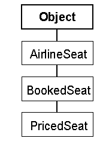
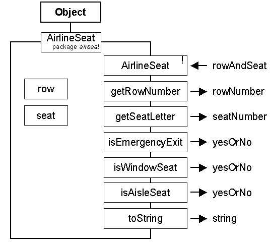
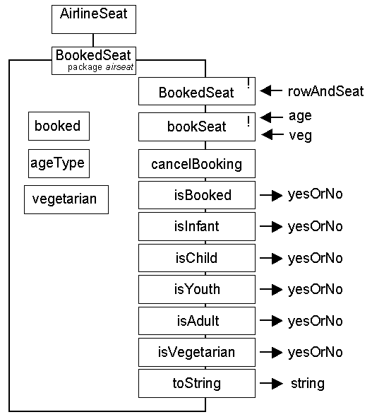

Waypoint 5 S2 2001/2
The Flight Client
Waypoint 5 is a complete design, build, demonstrate and document exercise.
Specification
The specification is to implement and build a program with a menu driven user interface which will simulate some aspects of managing a single flight, making use of the airseat package from Waypoint 3, semester 1, 2001/02 session. The system should allow for
Setting up a flight.
Booking individuals onto a flight.
Allowing an individual to change their seat allocation.
Showing which seats are allocated and which are vacant.
Producing a list of vegetarians on the flight.
Producing a management summary containing the numbers of passengers and income obtained.
Exiting from the system.
The main menu might look something like this:
Flight JA12 London to Berlin, 28 Feb 2002 A Set up a flight. B Check in. C Change seat allocation. D Show seating plan. E List vegetarians. F Show management report. G Exit. Please enter choice :
Set up a flight
This option should always ask the user for a confirmation before proceeding as it will clear any existing details. The user should then be asked to indicate the flight number, destination (only those allowed for in the PricedSeat class) and the date of the flight. These details should always be shown above the main menu.
Check in
Checks a customer onto the flight. The customer name is not recorded only their age status, seat allocation and if they are a vegetarian. Infants and children are not to be allowed to sit anywhere in emergency exit rows.
Change seat allocation
A customer already checked in can be reallocated to any available and suitable empty seat.
Show seating plan
This option should give a visual representation of the current state of the flight. It should clearly show which seats are allocated and which are free, which are emergency exit seats and which are aisle seats.
List vegetarians
A list of all vegetarians indicating which seats they are occupying should be produced.
Management report
This should indicate the number of passengers in each price category, showing the seat price, taxes and total income for them; as well as these details for the entire flight.
Exit
This option should exit from the client.
Construction hints
You should use the airseat package available for download from this page, rather than any airseat package you may have constructed for waypoint 3.
You should commence by fully specifying the interactions that the user might have with the system. All menu options should be considered at this stage and all conditions which might arise should be thought about. (For example: how should the system react if an attempt is made to check in a passenger onto a flight that is totally full.)
You could show your user interface designs to your tutor at this stage in order to make sure that you fully understand the specification and so that they can assist you to find any considerations that you might have missed.
You should then construct an object instance diagram clearly identifying which instances of which classes are required and the relationships between them. This diagram should also indicate which parts need to be constructed as a part of this waypoint and which already exist.
Before starting construction of the Flight client you should prepare a construction plan which identifies the sequence in which the options will be developed and the stages at which it can be demonstrated. For example the first stage might result in a main menu with only the exit option operational, a second stage might add options B and D and require demonstration of these options to be operating satisfactorily before any other options are added.
You are more likely to get more marks for a submission which has several options working perfectly than for one which has all options present with few of them working!
The plan should also be used to record the amount of time (in hours) each stage took, what problems were encountered and how they were overcome.
The FlightDemo class available from this page contains some outline methods that might be useful. No changes should be made to the classes in the airseat hierarchy.
Plagiarism
It is very important that you are very careful about the help you might receive from other students. You will be required to submit all of your program listings electronically and they will be checked against all other student's listings. Submission of a listing which is essentially identical to that submitted by another student will be treated as a serious academic offence.
You should show your designs, and discuss your progress, with your tutor on a regular basis and make sure that your log book is signed to indicate this.
You may show and discuss designs and/or code fragments with other students; but you should not copy, or allow to be copied, any designs or code. You may be asked to attend a viva about your submission where your tutor will ask you questions about the details of your submission. You are responsible for the security of your user account, accordingly an explanation of similarity on the basis of 'someone must have copied my program from a floppy disk or an unsecured workstation' will not be accepted.
Submission
Your submission document should be bound, contain an index page and all pages must be numbered. All parts of the report, including program listings, must be clear and easily readable. All diagrams must be original, photocopies are not acceptable. Reports must be marked for your trutor's attention and NOT for fintan's attention. Tutors will be instructed not to mark submissions which are not presented as an indexed report!
The report should contain the following sections in the sequence indicated. The marks for each section are given on the right.
A user interface description (not
including a user guide)
|
10 |
Construction plan
|
20 |
The Flight
client
|
40 |
An annotated
demonstration of your client
|
15 |
Evaluation (max 500 words)
|
15 |
Deadline
The project report must be submitted via the CISM school office, in the usual way, no later than:
4:30 pm on Thursday 25 April 2002
The electronic handin must also be complete by this time.
The class hierarchy of the airseat package, is as follows.

- The AirlineSeat class contains attributes identifying the seat, from these attributes it can be determined if it is in an exit row, if it is a window seat or if it is an aisle seat.
- The BookedSeat class contains attributes determining if the seat is booked and, if so, if the traveller is an INFANT, CHILD, YOUTH or ADULT and also if they are a vegetarian.
- The PricedSeat class contains an attribute indicating the city that the passenger is travelling to or from and so can determine the price of the booking.
The class diagrams are as follows.


The class diagram for the PricedSeat class will not be given.
 Return to Waypoints
Schedule page
Return to Waypoints
Schedule page